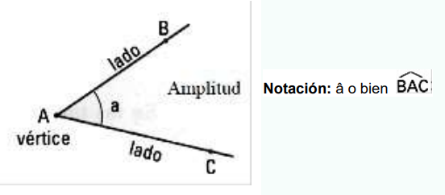

ÁNGULOS
Porción de un plano comprendida entre dos semirrectas de origen común llamado vértice. Los ángulos se nombran usando las letras que determinan los lados y dejando la letra que va en el vértice en la mitad.
• Los ángulos se simbolizan con ∡

Vértice: Punto en común que tienen sus lados.
Lados: Cada una de las semirrectas que lo forman.
Amplitud: Es la apertura de sus lados y se mide en grados.
Recuerde que:
- Para medir los ángulos se hace con el transportador.
- La unidad de medida para hallar el valor de los ángulos es el grado sexagesimal que así: 1º. Que es el ángulo que resulta de dividir un ángulo recto en 90 partes iguales.
- Para dar más precisión a la medida de los ángulos se utilizan otras medidas más pequeñas que el grado, como el minuto que se representa así: 1’ y el segundo que se representa así: 1”.